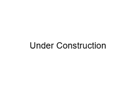

This website dates all the way back to my junior year of high school. It has grown into my part- personal project and part- project portfolio. It is coded completely from scratch and without the use of AI. A fun fact is that the overall style/CSS is almost exactly the same as it was when I first made the website, since I still love it!
Under construction. Thank you for your patience.